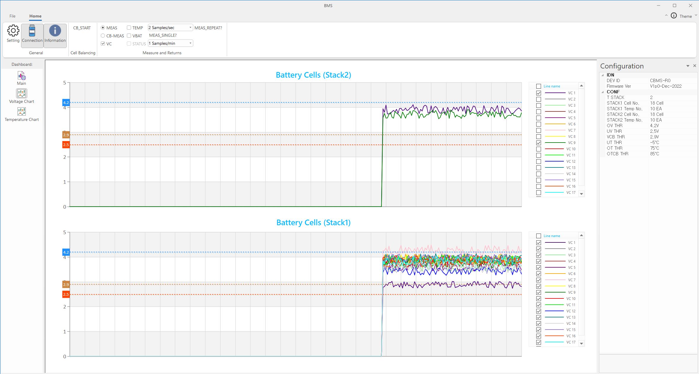
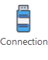
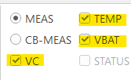
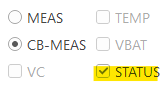
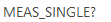
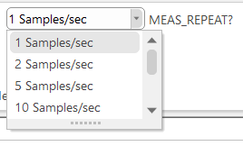
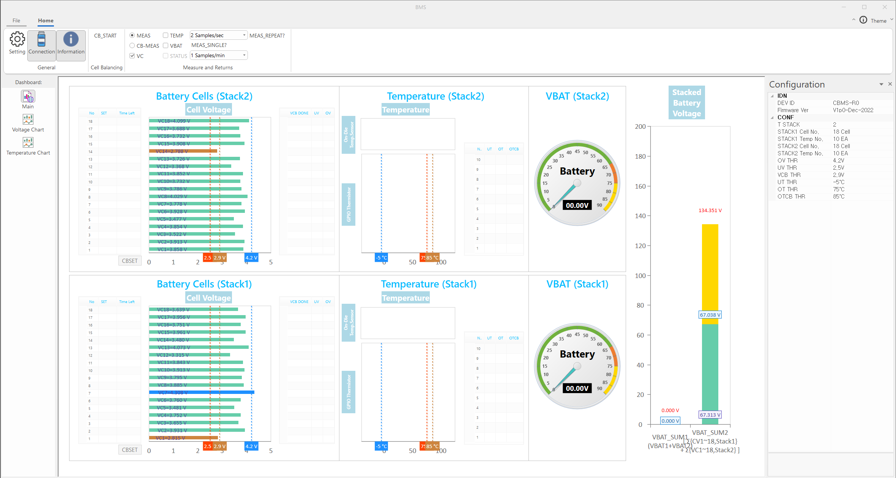
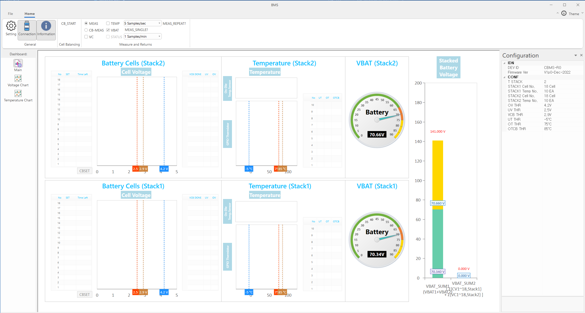
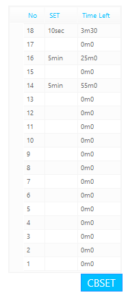

BMS
- BMS 는 Battery Management System 의 GUI 프로그램으로, 셀 밸런싱 (CB) 및 온도 측정 등 각종 배터리 제어에 대한 정보를 Dashboard 형태로 제공한다.
- 사용 예시)

Dashboard Page구성
- Main Page, Voltage Chart Page, Temperature Chart Page의 3가지 page로 구성된다.
Main Page
- 전체 데이터를 볼 수 있다.

Voltage Chart Page
- 실시간 Cell Voltage 변화를 볼 수 있다.

Tempterature Chart Page
- 실시간 Temperature 변화를 볼 수 있다.

1. 연결
 Setting
Setting
- serial communication 를 위해 Port 와 Buadrate 를 설정한다.

 Connection
- setting 값으로 connection 한다.
- connection 완료 시 dashboard 에 IDN, CONF 정보가 표시된다.
- Connection 전

- Connection 후

- Configuration docking bar 를 on / off 한다. (default on)
- Configuration docking bar 는 IDN, CONF 정보를 표시한다.
- on
- off

2. 설정 및 실행
설정
- 'MEAS', 'CB-MEAS' 2가지 type 설정이 존재한다.

- 'MEAS' type 에선 'VC', 'TEMP', 'VBAT' 3가지 mode 설정이 가능하다.

- 'CB-MEAS' type 에선 'STATUS' 의 mode 설정이 가능하다.

실행
'단일 실행'과 '반복 실행' 이 존재한다.
-  단일 실행
- connection 완료, type 및 mode 설정이 완료된 경우에만 버튼이 활성화 된다.
- 버튼 클릭 시, 설정된 'type' 과 'mode' 에 맞춰 동작을 한번 실행한다. (mode 는 중첩 선택 가능)
- ex) MEAS type에 TEMP, VBAT mode가 설정된 경우

 반복 실행
반복 실행
- 설정된 주기로 동작을 반복 해서 실행한다.
- MEAS 반복 주기

- CB-MEAS 반복 주기

3. 동작 실행 예시
MEAS
ex) VC
- Main Page
- Cell Voltage 그래프와 Stacked Battery Voltage 그래프가 나타난다.

- Voltage Chart Page
- check 된 범례에 대해서 실시간 변화 그래프가 나타난다. (default all check)
ex) TEMP
- Main Page
- Temperature 그래프가 나타난다.

- Temperature Chart Page
- check 된 범례에 대해서 실시간 변화 그래프가 나타난다. (default all check)
ex) VBAT
- VBAT 게이지와 Stacked Battery Voltage 그래프가 나타난다.

CB-MEAS
ex) none check
ex) STATUS
- Status 정보가 나타난다.

CB 동작 실행 루틴
- CB 시간값 설정

- CBSET 버튼을 클릭하여 설정한 CB 시간값 적용


- 버튼 클릭 시 적용된 CB 시간값으로 CB 동작 수행
 Information
Information